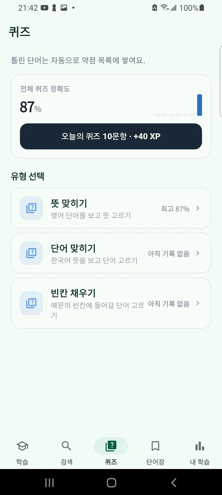
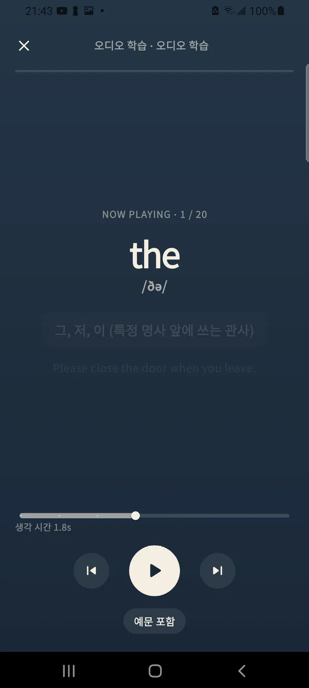
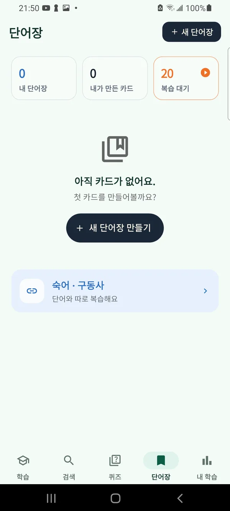
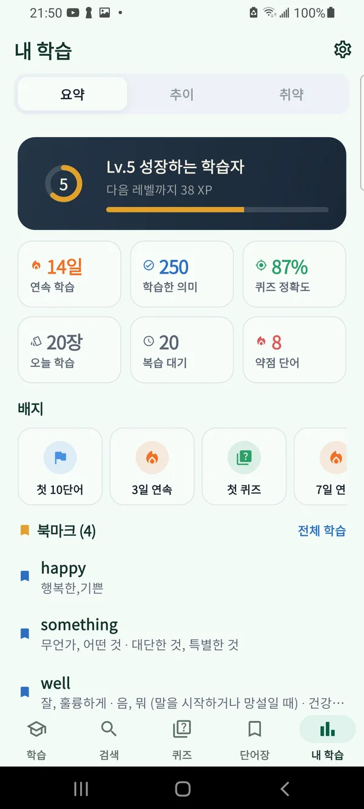
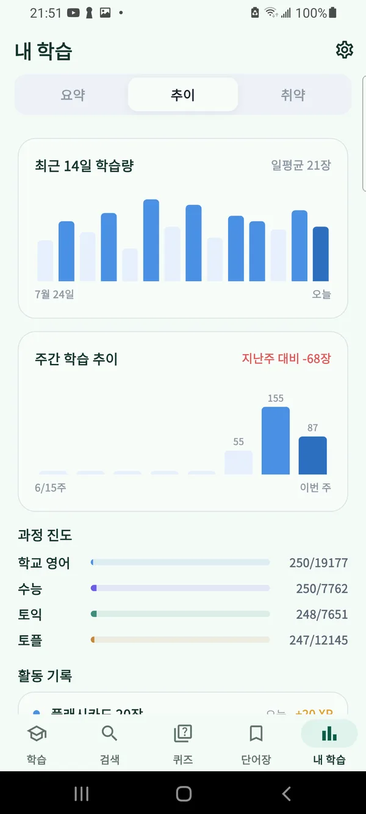

수능·토익·토플 영단어,
뜻 하나하나까지
English vocabulary
for Korean speakers
韓国語話者のための
英単語アプリ
초등부터 수능·토익·토플까지 영단어 13,567개를 4개 과정 19단계로 나눴습니다. 뜻이 여러 개인 단어는 뜻마다 예문과 함께 따로 익히고, 잊을 때쯤 다시 복습합니다. 13,567 English words for Korean learners, sorted into school, CSAT, TOEIC and TOEFL courses. Words with several meanings are learned meaning by meaning, each with its own example sentences and Korean translation. 韓国語を話す人のための英単語13,567語。学校英語・修能（韓国の大学入試）・TOEIC・TOEFLのコース別に分け、意味が複数ある単語は意味ごとに例文と韓国語訳で覚えます。
무료 · 광고 포함 · 프리미엄 이용권은 선택 Free · Contains ads · Korean only 無料・広告あり・韓国語のみ
This app is built for Korean speakers learning English, so every menu and meaning is in Korean. For the full feature list, switch to KO at the top.
このアプリは英語を学ぶ韓国語話者向けのため、メニューと意味はすべて韓国語です。詳しい機能は上の KO に切り替えるとご覧いただけます。
run은 '달리다'만이 아닙니다
뜻마다 품사와 예문 2개, 한국어 번역이 따로 있고, 별점(★)은 그 뜻이 얼마나 자주 쓰이는지 보여 줍니다. 카드는 한 장에 뜻을 모두 모아 볼 수도, 뜻마다 나눠 볼 수도 있습니다.
4개 과정, 19단계
앞둔 시험에 맞는 과정과 단계만 골라 공부합니다. 한 단어가 여러 과정에 함께 들어갈 수 있고, 이미 아래 단계에서 나온 단어는 숨길 수 있습니다.
모든 단어에 CEFR 등급이 붙어 있습니다
카드, 퀴즈, 듣기, 단어장까지Screens (in Korean)アプリ画面（韓国語）
옆으로 넘겨 실제 화면을 보세요.Swipe through the actual screens.横にスクロールして実際の画面をご覧ください。





외우고, 풀고, 듣고, 다시 꺼내 봅니다
잊을 때쯤 돌아오는 카드
FSRS 간격 반복으로 복습 날짜를 잡습니다. 새 카드와 복습 카드를 섞어 공부하고, 중간에 그만둬도 '이어서 학습'으로 남은 카드부터 다시 시작합니다.
퀴즈 5종
뜻 맞히기, 단어 맞히기, 예문 빈칸 채우기, 듣고 맞히기, 스펠링 쓰기. 틀린 문제는 바로 다시 풀고, 약점 목록에 모입니다.
듣기만 해도 복습
영어 단어, 잠깐의 생각할 틈, 한국어 뜻, 예문 순서로 읽어 줍니다. 출퇴근길에 휴대폰을 주머니에 넣어 두고 귀로 들으세요.
미국·영국 발음
모든 단어에 발음 기호가 있고, 미국식과 영국식 발음을 골라 들을 수 있습니다.
숙어·구동사 1,076개
"give up", "back to square one"처럼 자주 쓰는 표현을 기본 단어와 예문에 묶어 과정별로 익힙니다.
went로 찾아도 go가 나오는 검색
표제어, 한국어 뜻, 과거형 같은 변화형으로 검색합니다. 비슷한 말(유의어)을 눌러 다른 단어로 바로 넘어갈 수 있습니다.
나만의 단어장
외우기 어려운 단어를 모아 단어장을 만들고, 텍스트 파일로 단어 목록을 한 번에 가져올 수 있습니다.
연속 학습과 오늘의 미션
매일 공부하면 연속 학습일이 쌓이고, 하루 빠져도 스트릭 프리즈로 기록을 지킵니다. 오늘의 미션과 정해 둔 시간의 알림이 습관을 돕습니다.
학습 통계와 백업
학습량, 과정별 진도, 퀴즈 정답률, 주간 추이, 약점 단어를 한눈에 봅니다. 학습 기록과 단어장은 파일로 백업해 새 기기로 옮길 수 있습니다.
단어와 퀴즈는 모두 무료입니다
프리미엄 이용권은 1개월·1년 단위로 구매하며 자동으로 갱신되지 않습니다. 광고만 없애고 싶다면 앱에서 모은 코인으로도 광고를 끌 수 있습니다.
무료
광고 포함
- 영단어 13,567개 · 숙어·구동사 1,076개 전부
- 플래시카드 · 퀴즈 5종 · 듣기 학습
- 나만의 단어장 5개 · 학습 통계 · 백업
- 앱에서 모은 코인으로 광고 제거
프리미엄
1개월 · 1년 이용권
- 배너·전면 광고 완전 제거
- 세션당 카드 수 무제한
- 세션 자동 반복 학습
- 카드 방향 뜻→영어 (단어 떠올리기)
- 나만의 단어장 무제한
자주 묻는 질문
과정과 단계는 어떻게 나눴나요?
초등 단어는 교육부 영어과 교육과정의 기본 어휘 목록을 참고했고, 각 과정 안의 단계는 자주 쓰이는 순서로 나눴습니다. CEFR 등급은 공개된 CEFR-J 어휘 목록과 대조했습니다. 시험 기관의 공식 출제 목록은 아니니 학습 순서를 잡는 기준으로 써 주세요.
영어를 거의 처음 배우는데 괜찮을까요?
네. 학교 영어 과정의 '초등 기초'부터 시작하면 됩니다. 모든 단어에 한국어 뜻과 번역된 예문, 발음이 있습니다.
계정이 필요한가요?
아니요. 회원가입이나 로그인 없이 쓸 수 있습니다. 학습 기록은 기기에 저장되고, 기기를 바꿀 때는 백업 파일로 옮깁니다.
아이폰에서도 쓸 수 있나요?
현재는 안드로이드 전용이며 구글플레이에서만 받을 수 있습니다.
잘못된 뜻풀이나 예문을 발견했어요.
해당 단어와 문제점을 teamstar13000@gmail.com으로 보내 주세요. 모두 읽고, 확인되면 다음 업데이트에 반영합니다.
준비하는 시험 단계부터 시작해 보세요Start with your exam's level目標の試験レベルから始めましょう
무료로 설치하고 오늘 분량부터 외워 보세요.Free to install · Korean only無料・韓国語のみ